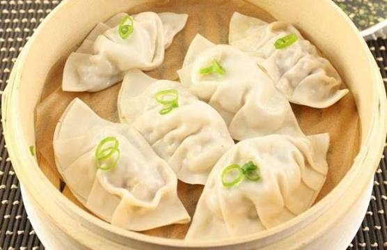
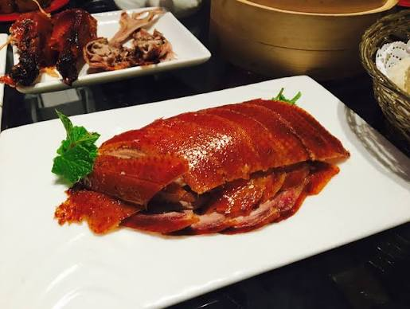
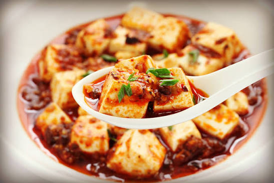
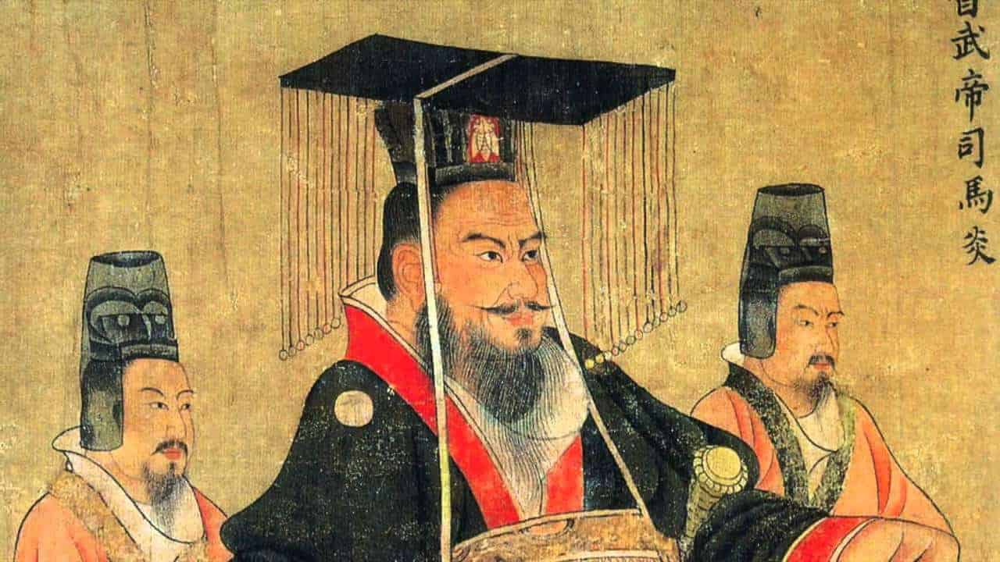
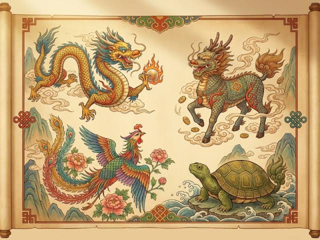
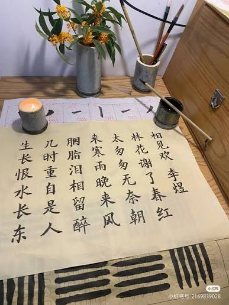

Tinh Hoa Ẩm Thực Trung Hoa

1. Dimsum (Điểm Sấm)
Nghệ thuật ẩm thực Quảng Đông với hàng chục món bánh nhỏ xinh như há cảo, xíu mại, bánh bao hấp trong xửng tre nóng hổi.
Ấn vào để xem Nguồn gốc, Hương vị & Cách làm Dimsum →

2. Vịt Quay Bắc Kinh
Món ăn trứ danh của hoàng cung Bắc Kinh nổi bật với lớp da mỏng giòn rụm màu cánh gián và thịt mềm ngọt thơm lừng.
Ấn vào để xem Nguồn gốc, Hương vị & Bí quyết chế biến Vịt quay →

3. Đậu Phụ Tứ Xuyên (Mapo Tofu)
Đặc sản vùng Tứ Xuyên kết hợp giữa những miếng đậu phụ non mềm mịn và xốt thịt băm cay tê nồng nàn của hạt tiêu hoa tiêu.
Ấn vào để xem Nguồn gốc, Hương vị & Cách nấu Đậu phụ Tứ Xuyên →
Điểm Đến Du Lịch Nổi Tiếng Trung Quốc
1. Vạn Lý Trường Thành
Công trình phòng thủ quân sự kỳ vĩ dài hơn 21.000 km uốn lượn qua núi non hiểm trở suốt hơn hai thiên niên kỷ.
Ấn vào để xem Lịch sử xây dựng, Kiến trúc & Điểm tham quan →
2. Tử Cấm Thành (Cố Cung Bắc Kinh)
Quần thể cung điện bằng gỗ cổ lớn nhất thế giới của 24 vị hoàng đế hai triều đại Minh - Thanh với 9.999 gian phòng.
Ấn vào để xem Nguồn gốc, Nghệ thuật kiến trúc & Giá trị di sản →
3. Bến Thượng Hải
Biểu tượng giao thoa Đông - Tây bên dòng sông Hoàng Phố với một bên là các tòa nhà cổ điển châu Âu và một bên là tháp Minh Châu Phương Đông hiện đại.
Ấn vào để xem Lịch sử phát triển, Cảnh sắc & Trải nghiệm về đêm →
Lịch Sử Và Văn Hóa Trung Quốc

1. Lịch Sử Thời Kì Phong Kiến Trung Quốc
Hành trình lịch sử từ thời Tần Thủy Hoàng thống nhất Trung Hoa qua các triều đại Hán, Đường, Tống, Nguyên, Minh, Thanh cùng Tứ đại phát minh.
Ấn vào để xem Các triều đại tiêu biểu & Thành tựu văn minh →

2. Tứ Linh (Long - Lân - Quy - Phụng)
Tứ linh huyền thoại trong văn hóa phương Đông tượng trưng cho quyền uy, điềm lành, sự trường thọ và đức hạnh cao quý.
Ấn vào để xem Nguồn gốc & Ý nghĩa biểu tượng của từng linh vật →

3. Nghệ Thuật Thư Pháp Trung Hoa
Bộ môn nghệ thuật viết chữ Hán bằng bút lông và mực tàu với Văn phòng tứ bảo (Bút, Nghiên, Giấy, Mực) rèn luyện tâm tính con người.
Ấn vào để xem Lịch sử chữ viết, Các thể chữ & Cách viết Thư pháp →